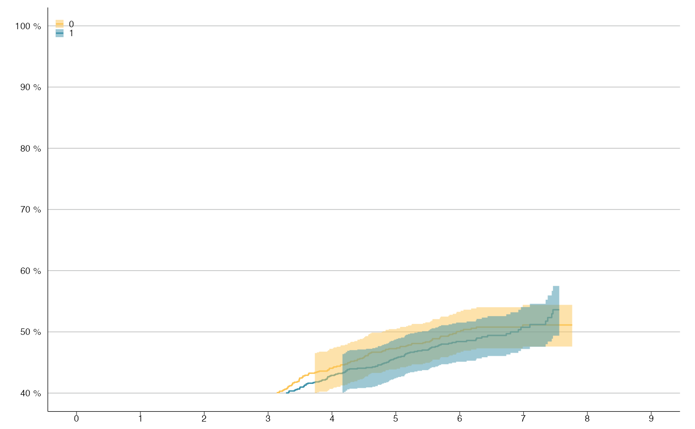
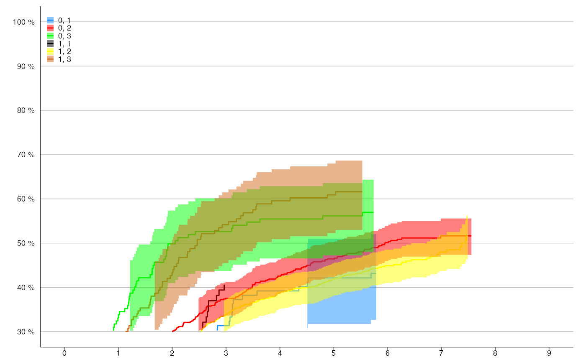

By default it plots 1-KM. Set cum_inc = FALSE to plot the survival function.
km_plot(
survfit_obj,
make_step = NULL,
cum_inc = TRUE,
first_point = 1,
one_level = FALSE,
y_lim = NULL,
percent_accuracy = 1,
y_breaks = 5,
x_lim = NULL,
x_breaks = 1,
n_points = NULL,
n_risk_break = 50,
title = NULL,
subtitle = NULL,
y_lab = NULL,
x_lab = NULL,
line_size = 0.5,
show_ci = TRUE,
ribbon_ci = TRUE,
ribbon_alpha = 0.5,
ci_line_size = 0.2,
line_colors = NULL,
legend.position = c(0, 1),
legend_labels = ggplot2::waiver(),
label_breaks = ggplot2::waiver(),
...
)Object returned from survival::survfit().
Also works with data frame
if year and surv variable exist. lower
and upper variable needed if show_ci = TRUE.
Specify strata variable needed
if several curves wanted.
If TRUE, step data will be created.
If TRUE, 1-KM is plotted.
If make_step = TRUE, first_point for KM is
1 and for competing risk 0.
Boolean indicating if there is only one level in the strata.
Limit on y-axis.
Set accuracy for scales::percent_format().
Length between each break on y-axis.
Limit on x-axis.
Length between each break on x-axis.
Number of points to be plotted, useful to change if file is large because of too many points!
Minimum number at risk to include
Plot title, NULL for no title.
Small text under title, NULL for no subtitle.
X- and Y-axis labels.
Size of the head lines.
If TRUE, show confidence interval lines.
Show confidence interval
Degree of transparency for confidence interval
Size of the confidence interval lines.
Color of the different curves.
Position of the legend in plot.
Label for each legend key, default order as
they appear in names(survfit_obj$strata).
Order of the legend keys.
arguments passed to theme_slr()
ggplot object containing Kaplan-Meier plot.
library(survival)
# KM-plot with 2 levels
survfit_obj <- survfit(Surv(time / 365.24, status) ~ sex, survival::colon)
km_plot(survfit_obj, y_lim = c(40, 100), y_breaks = 10, x_lim = c(0, 9))
#> Warning: Removed 1264 row(s) containing missing values (geom_path).

# KM-plot with 6 levels
survfit_obj <- update(survfit_obj, . ~ . + differ)
km_plot(survfit_obj, y_lim = c(30,100), y_breaks = 10, x_lim = c(0,9),
line_colors = c('dodgerblue', 'red', 'green', 'black', 'yellow', 'chocolate'))
#> Warning: Removed 1000 row(s) containing missing values (geom_path).
#> Warning: no non-missing arguments to max; returning -Inf
